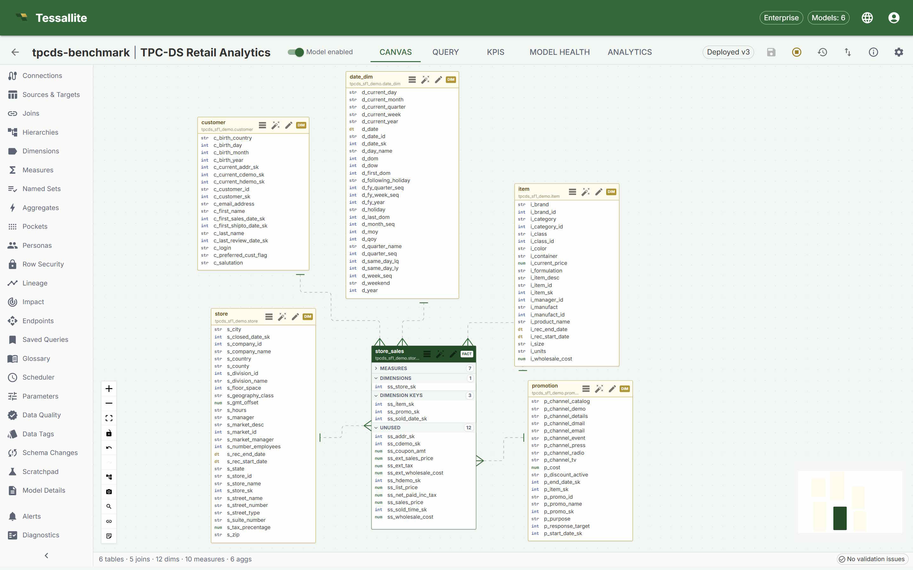
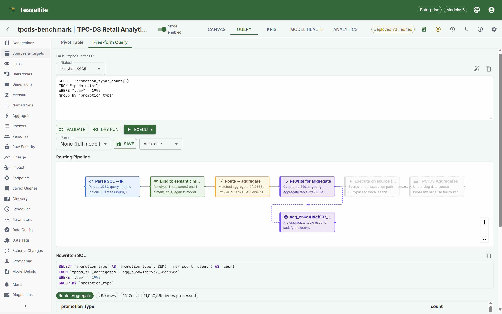
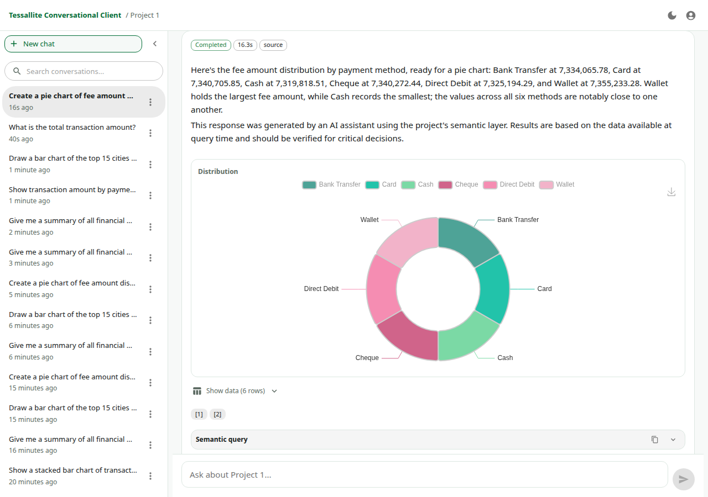
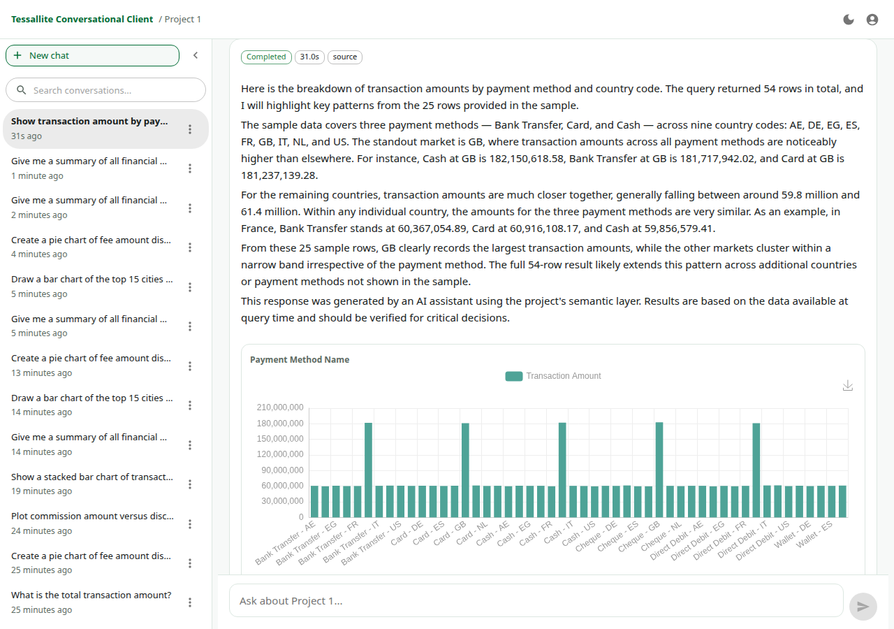
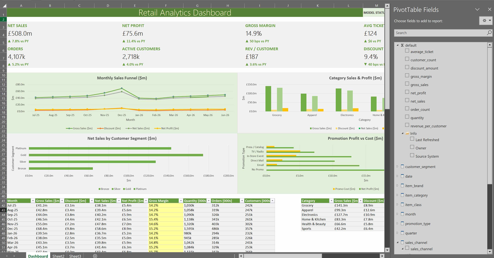
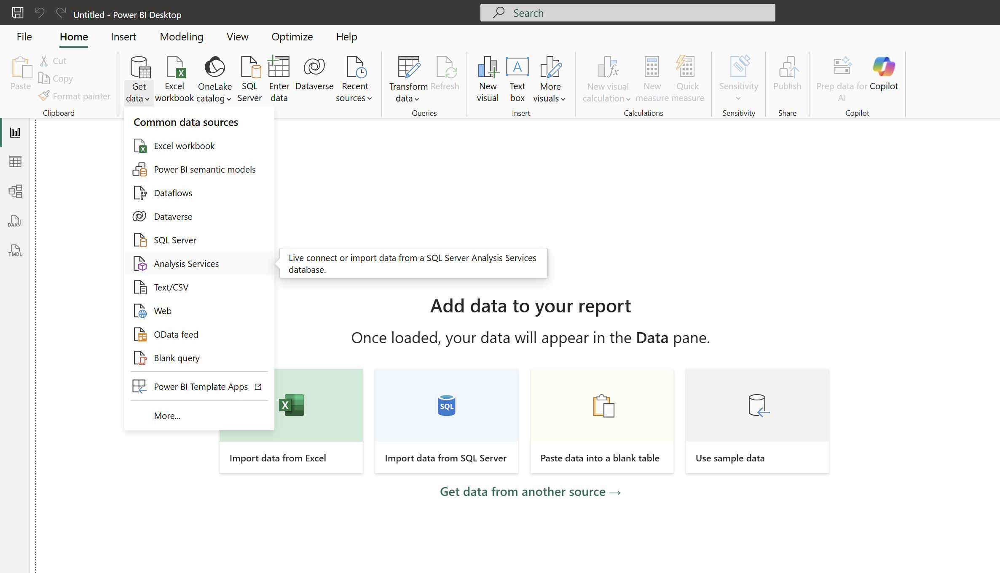
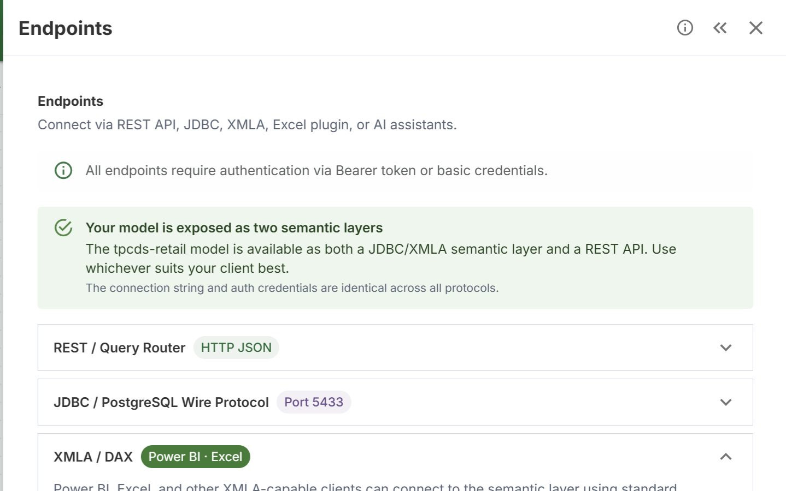
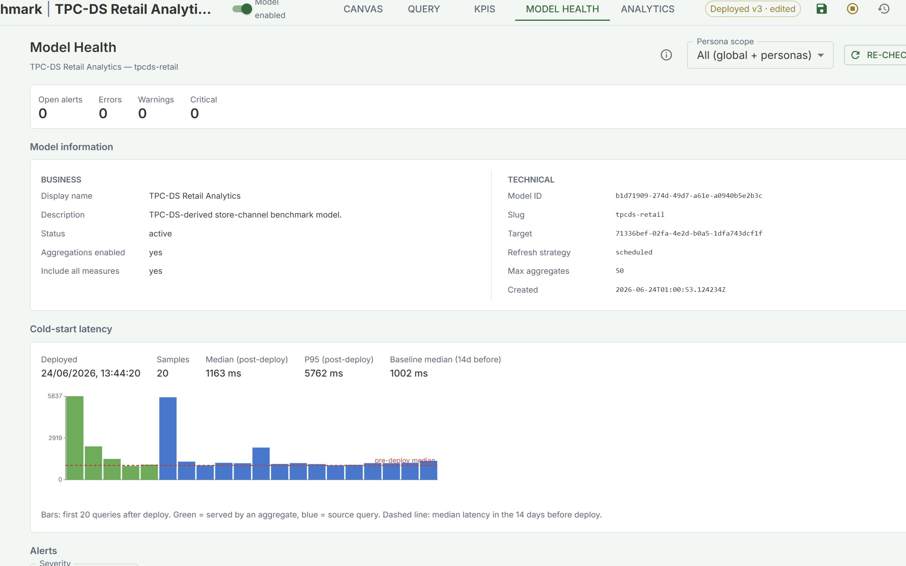
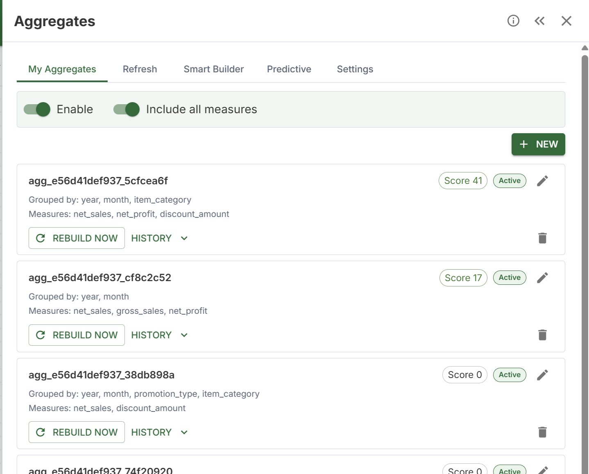
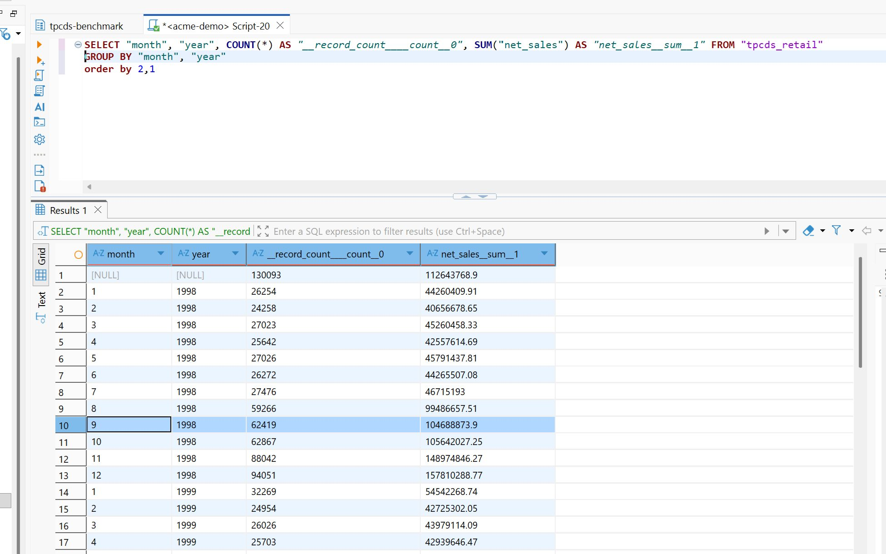

Define once
Modellers define measures, dimensions, joins, personas, glossary terms, and acceleration rules in Model Builder.
Product tour
These are real Tessallite screenshots from the product, help library, and UAT runs. They show how the platform moves from model definition to governed query execution and familiar business tools.
Modeller workspace
The modeller workspace is where a project owner defines the model before dashboards, SQL clients, Excel, and the agent can use it.

The canvas shows the fact table in context with related dimensions, joins, model status, deployment state, and validation feedback. The modeller can move between the canvas, query panel, model health, and usage analytics without leaving the model.
Evidence shown: deployed TPC-DS Retail model with source tables, joins, measures, dimensions, aggregates, and validation status visible in the workspace.
Query execution
The query screen shows the path a question takes through Tessallite: parse, semantic binding, route selection, rewrite, execution, and result review. The example shows an aggregate route with generated SQL and returned data.
Evidence shown: parse, bind, route, rewrite, and result stages, with the query routed through an aggregate and rewritten SQL displayed.

Conversational agent
The agent answers from the approved model context — the same measures, security, and definitions every other tool uses — and shows its working, so business users self-serve without leaving governance behind.


A business user asks a question in natural language; the agent resolves it against the deployed model, runs it through the same governed routing as every other client, and returns a written answer, a chart, the underlying rows, and the semantic query behind it.
Evidence shown: real answers captured by the conversational-agent UAT harness — a fee-amount donut and a transaction-by-payment-method bar chart, each with its narrative answer, data rows, and semantic query.
Excel, Power BI, and SQL clients
Tessallite supports Excel through XMLA PivotTables, Power BI through Analysis Services, and SQL clients through the PostgreSQL wire endpoint. These paths use the deployed model, row security, personas, and approved measures.


The BI connection workflow uses Tessallite endpoints so a workbook, dashboard, or SQL client can browse governed models and run queries without copying metric logic into each tool.
Evidence shown: an Excel retail analytics workbook using model fields, plus the Power BI Analysis Services connection path.
Operations and connectivity
These views are useful during evaluation because they show the operational proof behind the model: endpoints, health status, aggregate acceleration, and direct SQL client access.

Evidence shown: the XMLA/DAX connection string and protocol-specific tabs.

Evidence shown: zero open alerts and a cold-start latency chart.

Evidence shown: active aggregates with grains, measures, scores, rebuild controls, and history.

Evidence shown: DBeaver connected to Tessallite and returning query results.
How the views fit together
Modellers define measures, dimensions, joins, personas, glossary terms, and acceleration rules in Model Builder.
The conversational agent answers from approved model context and exposes charts, data, trace, and diagnostics.
Excel, dashboards, SQL clients, applications, and the agent all use the same published model and security rules.
Start with a Community licence, install locally, then explore the modeller, agent, and Excel workflows against the same model.